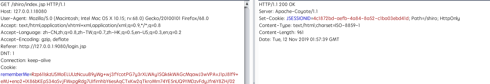

背景介绍
前一段时间Apache发了一个Shiro的漏洞通告RememberMe Padding Oracle Vulnerability，原因是Shiro使用了AES-128-CBC模式对cookie进行加密，导致恶意用户可以通过padding oracle攻击方式构造序列化数据进行反序列化攻击。
SHIRO是一个JAVA WEB中使用率很高的权限管理组件，平时HW、攻防演练遇到的也很多，于是拿来研究一下,记录一下。
漏洞分析
shiro反序列化的攻击流程大家都比较熟悉，然而这次漏洞加入了padding oracle攻击方式比较令人费解，这里首先介绍一下padding oracle的利用方式。
Padding Oracle构造数据
网上已经有很多介绍Padding Oracle Attack的原理介绍和利用方法的文章，但是绝大部分都是讲如何获取明文，这就让人很难利用Padding Oracle方式攻击Shiro，Padding Oracle的另外一种利用方法就是构造加密数据，可以参考这篇文章。
Going the other way with padding oracles: Encrypting arbitrary data!
利用Padding Oracle构造密文
Select a string, P, that you want to generate ciphertext, C, for
Pad the string to be a multiple of the blocksize, using appropriate padding, then split it into blocks numbered from 1 to N
Generate a block of random data (CN – ultimately, the final block of ciphertext)
For each block of plaintext, starting with the last one…
* Create a two-block string of ciphertext, C’, by combining an empty block (00000…) with the most recently generated ciphertext block (Cn+1) (or the random one if it’s the first round)
* Change the last byte of the empty block until the padding errors go away, then use math (see below for way more detail) to set the last byte to 2 and change the second-last byte till it works. Then change the last two bytes to 3 and figure out the third-last, fourth-last, etc.
* After determining the full block, XOR it with the plaintext block Pn to create Cn
* Repeat the above process for each block (prepend an empty block to the new ciphertext block, calculate it, etc)
To put that in English: each block of ciphertext decrypts to an unknown value, then is XOR’d with the previous block of ciphertext. By carefully selecting the previous block, we can control what the next block decrypts to. Even if the next block decrypts to a bunch of garbage, it’s still being XOR’d to a value that we control, and can therefore be set to anything we want.
以下是对整个过程的一个java实现的核心代码片段，原文看不懂可以结合代码理解
shiro中利用
shiro对cookie的处理过程
认证失败时会设置deleteMe的cookie
认证成功则不会设置deleteMe的cookie

根据以上条件我们的思路是在正常序列化数据（需要一个已知的用户凭证获取正常序列化数据）后利用padding oracle构造我们自己的数据（需要学习的另一个知识点是java序列化数据后的脏数据不影响反序列化结果，感谢@imbeee），此时会有两种情况
- 构造的数据不能通过字符填充验证，返回deleteme
- 构造的数据可以成功解密通过字符填充验证，之后数据可以正常反序列化，不返回deleteme的cookie
Enter-hacking
- ysoserial生成payload
- 生成加密后的paylaod
- 点击生成计算器
这个漏洞利用方式尽然有些鸡肋，但shiro框架是红队评估中很常见，只有了解了漏洞的每一个细节，才能在红队行动中攻城掠地。